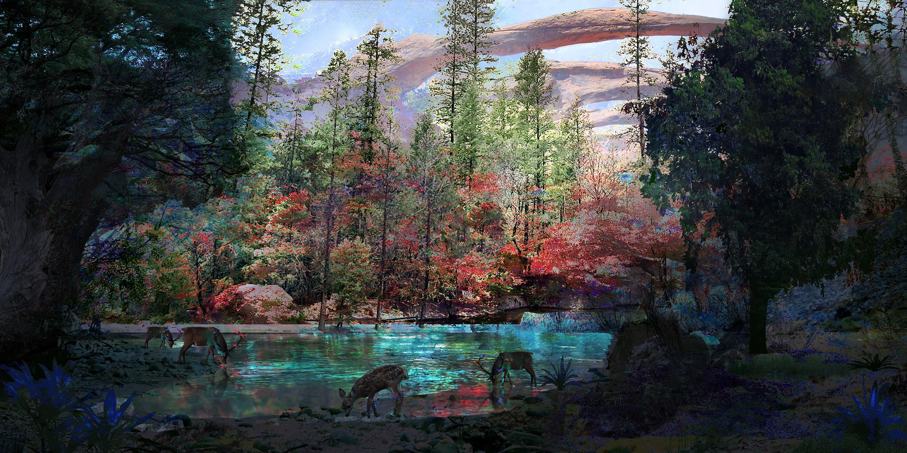

Under the influence of Marah, Edolas contrasts
Algor by fostering scorching weather, causing
sand and eroded soil to be the most prominent
terrain. Most of the day, a brutal, relentless sun
beats down on the surface, followed by nightly
bone-freezing temperatures. Life is so scarce in
Edolas, that it mostly flourishes around the
Sirelean Lake, which magically repels the heat
allowing life to prosper. Across the vast
Desolation, the city of Solarium relied on spells to
shield itself from the heat. Now its magical
inhabitants have to expel dangerous creatures
drawn to its cityscape glow every night.

MYTHS from Zuria